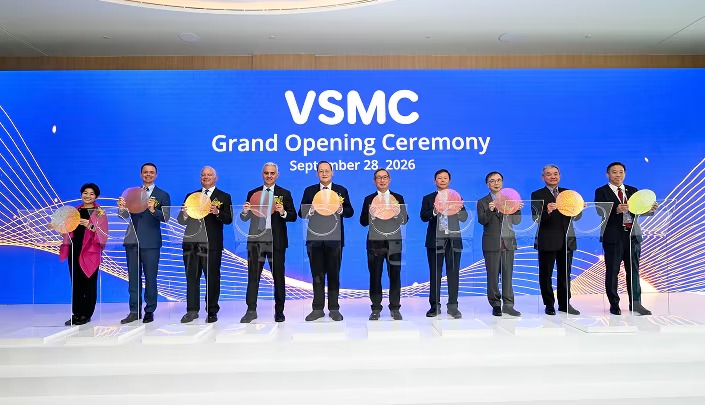
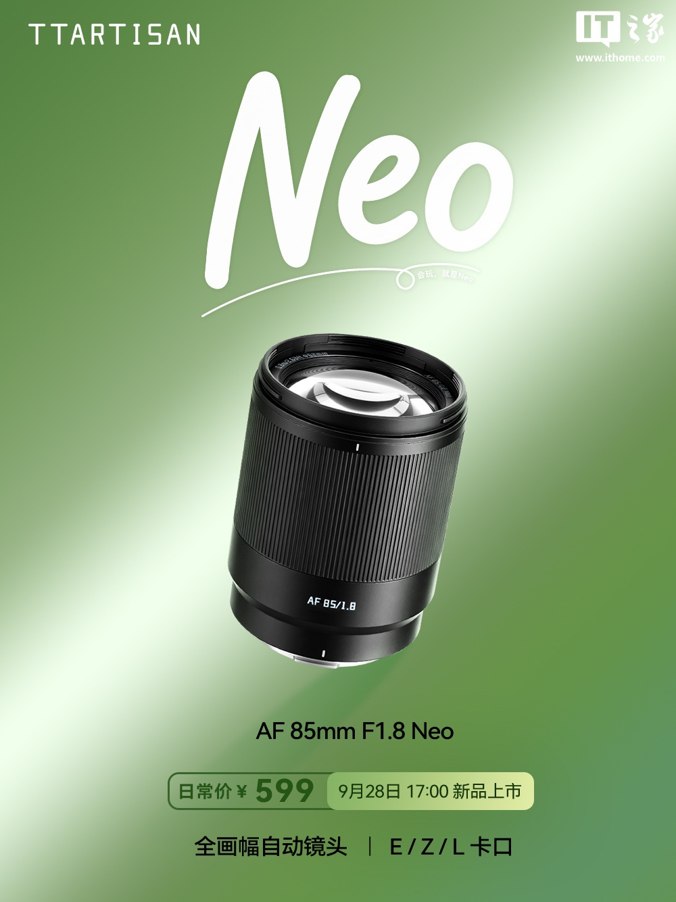
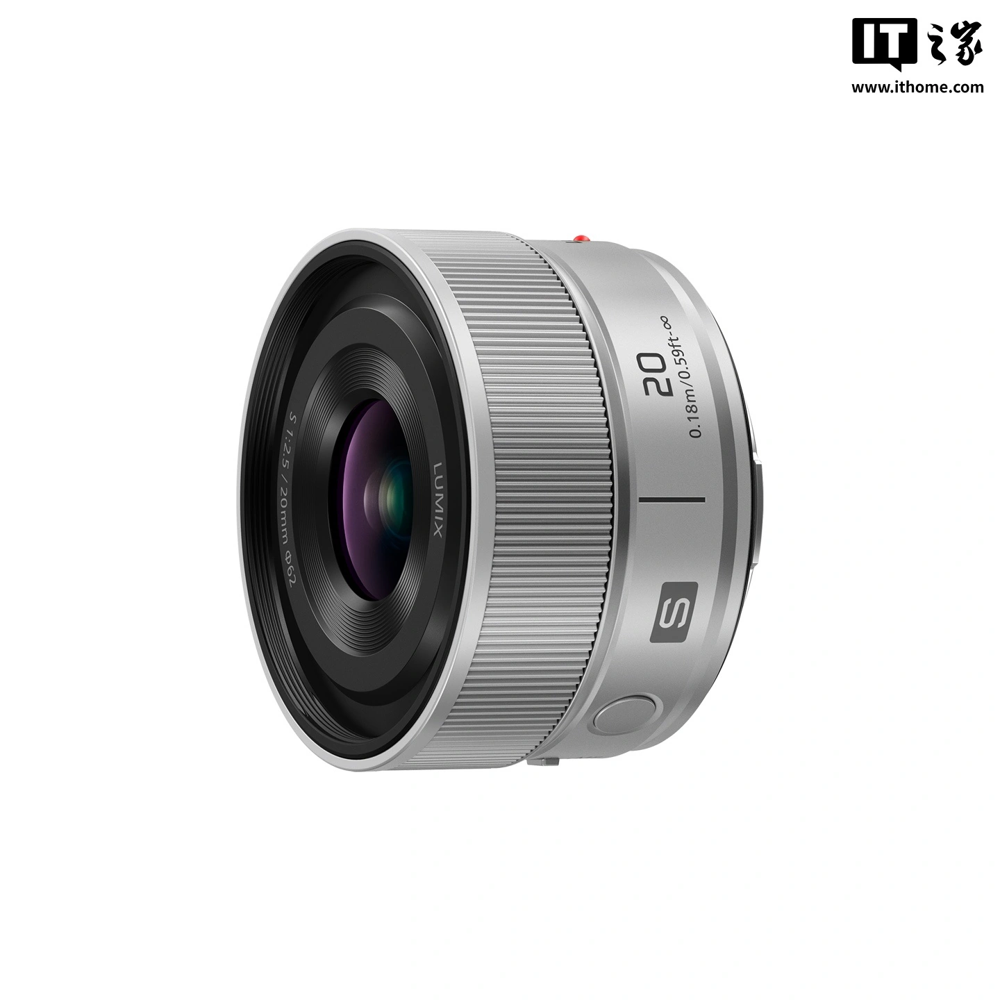
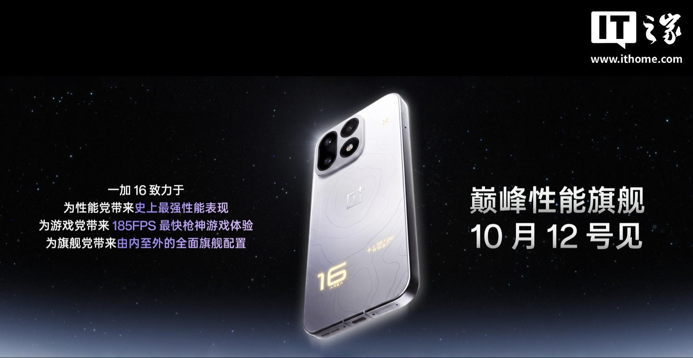
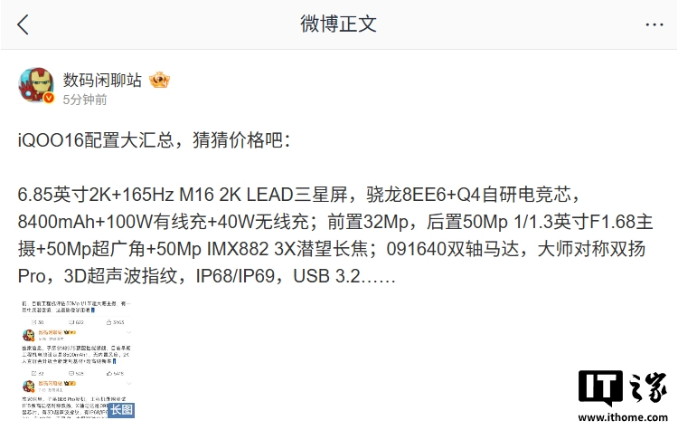
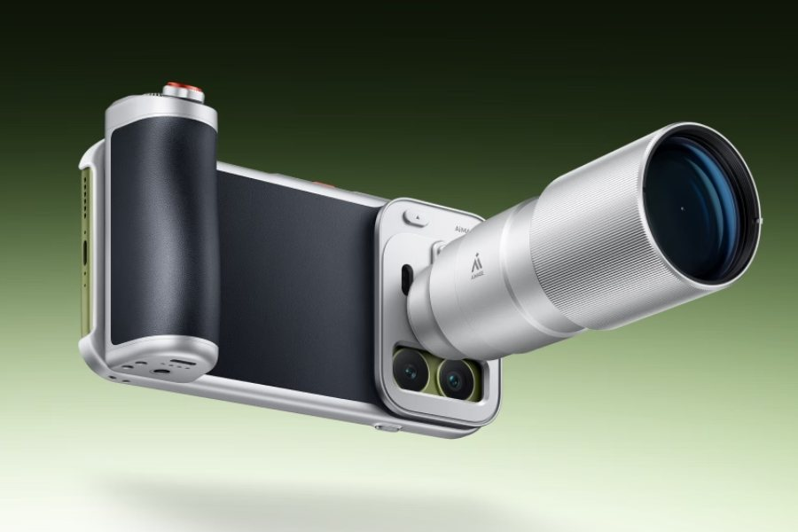
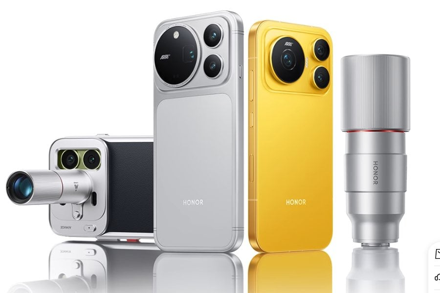
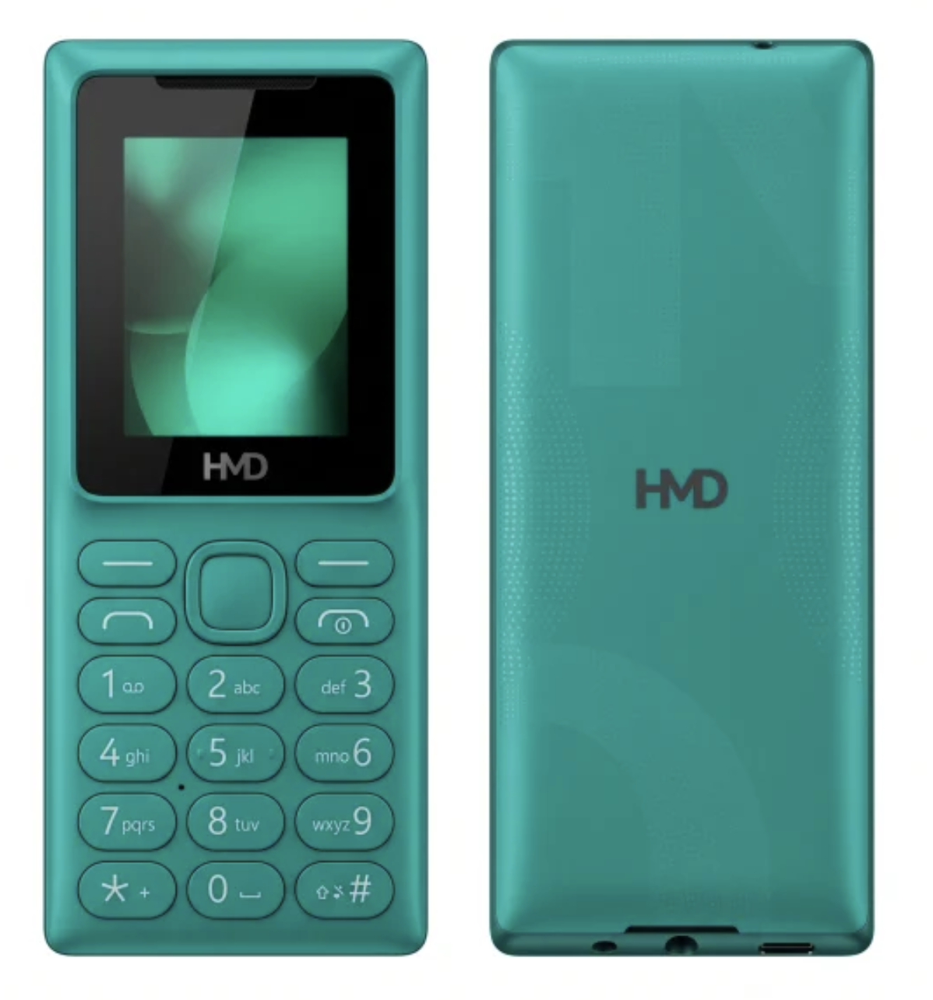
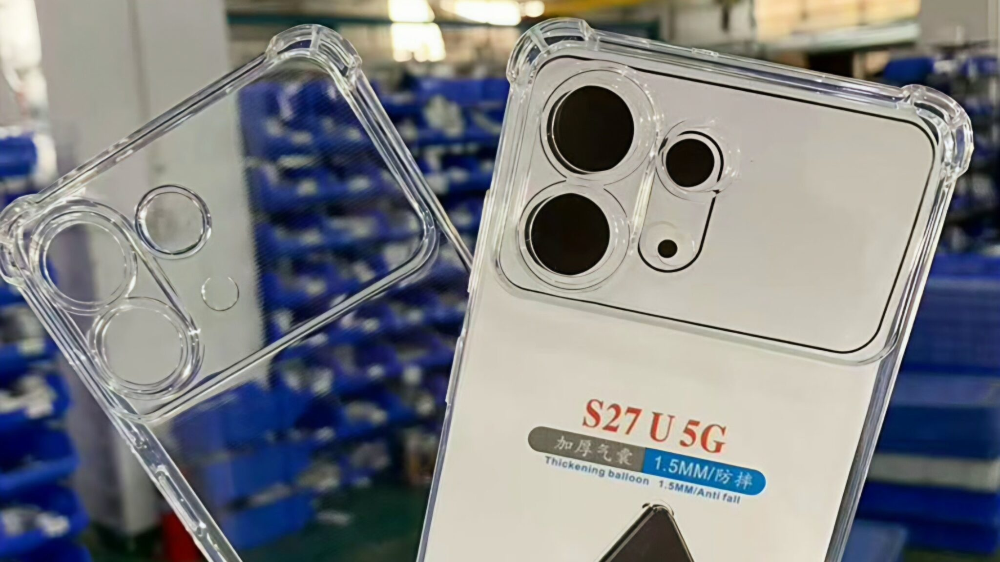
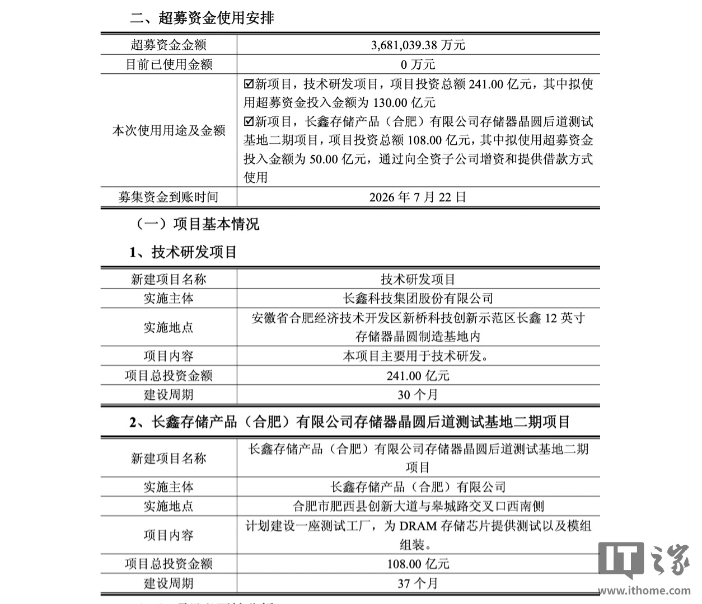

THE TECH EDIT
기술의 변화, 매일 한눈에.
카메라 · 스마트폰 · AI, 해외 테크 소식을 모아 전합니다.
최근 발행2026-09-29
새로 들어온 소식
LATEST STORIES
최신 뉴스
전체 3,354개 기사
세계 선진-NXP 합작사 VSMC, 싱가포르 첫 번째 팹 개소, 2027년 1분기 양산 예정

TTArtisan AF 85mm F1.8 Neo 풀프레임 카메라 렌즈, L 마운트 추가, 행사 가격 499위안

60년 만에 처음으로 Sony 그룹 및 계열사, CES 2027 불참

SK하이닉스, "일본 동북부 지역 웨이퍼 공장 착공설은 터무니없는 이야기"라며 반박

Samsung, 평택 P5 팹 PH1 DRAM 생산 라인 건설 가속화, PH2는 NAND 생산 가능성

레드매직 12 Pro+ 스마트폰 신제품 발표회 10월 15일 개최, 퀄컴 스냅드래곤 8 6세대 슈퍼 엘리트 칩 탑재

Panasonic LUMIX S 20mm F2.5 풀프레임 초광각 렌즈 출시: 142g, 2598위안
Oppo Reno16t, 200MP 트리플 카메라, 6700mAh 대용량 배터리 탑재하여 출시

Oppo F35 시리즈, 50MP 초광각 셀카 카메라 탑재하고 10월 5일 출시

OnePlus, "세계 최고 수준 185Hz 초고속 주사율" 기술 도입 발표, 풍치 게임 커널 및 자체 개발 e스포츠 3개 칩으로 "전체 링크 유창성" 구현

OnePlus 16 스마트폰, 10월 12일 출시 확정: 자체 개발 'e스포츠 3코어' 및 Qualcomm 6세대 스냅드래곤 8 슈퍼 엘리트 칩셋 최초 탑재

iQOO 16 스마트폰 사양 종합: 6.85인치 2K Samsung 디스플레이, Qualcomm 스냅드래곤 8 6세대 슈퍼 엘리트 프로세서

Honor Magic9 Pro Max, 듀얼 200MP 카메라 및 10,000니트 디스플레이 탑재하여 출시

Honor Magic9, 듀얼 200MP ARRI 카메라 및 200mm 텔레컨버터 탑재하여 출시

Honor Magic 9 Super Edition, 11,000mAh 배터리, 200MP 트리플 카메라, Snapdragon 8 Elite Gen 5 탑재하여 출시

HMD 106 Pure 스마트폰 조용히 출시, 2G 네트워크만 지원

갤럭시 S27 울트라 최신 케이스, 놀라운 카메라 위치 공개
쿨패드, 699위안 AI 스마트 안경 출시: 800만 화소 카메라, 틱톡 라이브 스트리밍, 영상 통화, 온라인 번역 지원
차이나유니온페이, Huawei 연간 플래그십 Mate 90 시리즈 스마트폰 공개, Huawei Pay로 홍콩 옥토퍼스 카드 직접 충전 지원

창신 테크놀로지: 기술 연구 개발 프로젝트에 241억 위안, 메모리 웨이퍼 후공정 테스트 기지 2단계 프로젝트에 108억 위안 투자 예정

Brightin Star, MF 50mm F2 TRI-SIGHT 렌즈 출시: 소프트 포커스/표준/버블 3가지 모드, 첫 출시 가격 2149위안
검색 결과가 없습니다
다른 검색어를 입력하거나 필터를 초기화해 보세요.